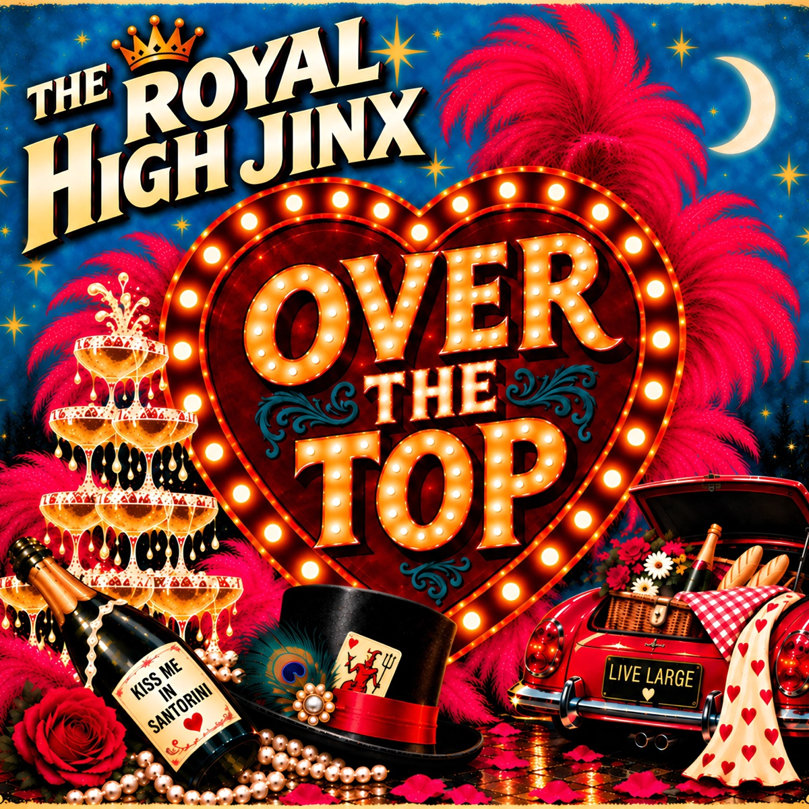

Over The Top · Track 8 of 10
Buddy And Jack
Buddy digs holes where the roses used to grow. Jack keeps watch at the back gate. And honestly? 100 puppies would beat the dating apps.
Out now on Bandcamp. Streaming everywhere from Friday 13 November 2026.
Lyrics
Buddy's digging holes
Where the roses used to grow
I guess he's planting secrets
Only he will know
Little Jack's keeping watch
He's down by the old back gate
He's marching up and down
With his tail held high
He's gonna set things straight
He cries ...
Ooo, ooo, ooo, ooo
I want 100 puppies
Maybe even more
A wagging, barking chorus
To greet you at my door
They'll lift up their voices
Howling free
Singing up a storm
Every little voice in harmony
They cry ...
I'm giving up on dating
Those apps don't treat me right
No lonely hearts
No sleepless nights
Swipe right on rescue
You watch me while I sleep
Keeping all my secrets
You're digging through my dreams